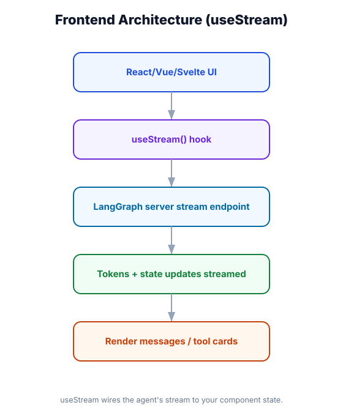

Frontend Architecture for LangChain Agents
What you'll learn: How to structure the full stack for an agent-powered application — the API layer between your agent and your frontend, session management, the FastAPI + SSE pattern for streaming, and which framework choices fit which use cases.

↗ Open full size · ⬇ Edit in Excalidraw — labels use real LangChain classes.
Diners (browser) don't walk into the kitchen (agent) — they interact with waitstaff (API layer). The waiter takes orders, relays them to the kitchen, and brings back food as it's ready. The kitchen doesn't need to know about the dining room layout, and the dining room doesn't need to know about recipe complexity. The API layer is your waiter: it mediates, authenticates, formats, and streams.
The Four-Layer Stack
FastAPI Streaming Backend
from fastapi import FastAPI, Request, HTTPException, Depends
from fastapi.responses import StreamingResponse
from fastapi.middleware.cors import CORSMiddleware
from pydantic import BaseModel
from langchain.agents import create_agent
from langchain.chat_models import init_chat_model
from langchain_core.messages import HumanMessage, AIMessageChunk
from langgraph.checkpoint.postgres.aio import AsyncPostgresSaver
import json, asyncio
app = FastAPI()
app.add_middleware(CORSMiddleware, allow_origins=["http://localhost:3000"], allow_credentials=True, allow_methods=["*"], allow_headers=["*"])
# ── Single agent instance (shared across all requests) ─────────────────────────
agent = create_agent(
model=init_chat_model("openai:gpt-4o-mini"),
tools=[...],
checkpointer=AsyncPostgresSaver.from_conn_string(DATABASE_URL),
)
# ── Request/response models ────────────────────────────────────────────────────
class ChatRequest(BaseModel):
message: str
thread_id: str
# ── Auth dependency ────────────────────────────────────────────────────────────
async def get_current_user(request: Request) -> dict:
token = request.headers.get("Authorization", "").replace("Bearer ", "")
if not token:
raise HTTPException(status_code=401)
return verify_jwt(token) # returns {"user_id": ..., "tenant_id": ...}
# ── Streaming chat endpoint ───────────────────────────────────────────────────
@app.post("/api/chat/stream")
async def chat_stream(
req: ChatRequest,
user: dict = Depends(get_current_user)
):
"""Stream agent response tokens as Server-Sent Events."""
async def event_generator():
config = {
"configurable": {
"thread_id": req.thread_id,
"context": {
"user_id": user["user_id"],
"tenant_id": user["tenant_id"],
}
}
}
try:
async for event in agent.astream_events(
{"messages": [HumanMessage(req.message)]},
config=config,
version="v2",
):
event_type = event["event"]
# Stream text tokens as they arrive
if event_type == "on_chat_model_stream":
chunk = event["data"]["chunk"]
if chunk.content:
yield f"data: {json.dumps({'type': 'token', 'content': chunk.content})}\n\n"
# Notify frontend when a tool is called
elif event_type == "on_tool_start":
yield f"data: {json.dumps({'type': 'tool_start', 'name': event['name'], 'input': event['data'].get('input', {})})}\n\n"
# Notify frontend when a tool finishes
elif event_type == "on_tool_end":
yield f"data: {json.dumps({'type': 'tool_end', 'name': event['name']})}\n\n"
# Signal completion
yield f"data: {json.dumps({'type': 'done'})}\n\n"
except Exception as e:
yield f"data: {json.dumps({'type': 'error', 'message': str(e)})}\n\n"
return StreamingResponse(
event_generator(),
media_type="text/event-stream",
headers={
"Cache-Control": "no-cache",
"X-Accel-Buffering": "no", # Critical: disable nginx buffering
}
)
# ── Non-streaming endpoint for simple queries ──────────────────────────────────
@app.post("/api/chat")
async def chat(req: ChatRequest, user: dict = Depends(get_current_user)):
config = {"configurable": {"thread_id": req.thread_id}}
result = await agent.ainvoke(
{"messages": [HumanMessage(req.message)]},
config=config,
)
return {"response": result["messages"][-1].content}
# ── Session management ────────────────────────────────────────────────────────
@app.get("/api/sessions/{thread_id}/history")
async def get_history(thread_id: str, user: dict = Depends(get_current_user)):
config = {"configurable": {"thread_id": thread_id}}
state = await agent.aget_state(config)
messages = [
{"role": "human" if m.__class__.__name__ == "HumanMessage" else "assistant",
"content": m.content}
for m in state.values.get("messages", [])
if hasattr(m, "content") and m.content
]
return {"messages": messages}Frontend Framework Choices
⚡ Next.js + App Router
Best overall choice. API routes live alongside React components. Server components handle auth. Built-in streaming support. Deploy to Vercel in one command. Use for most production agent UIs.
⚛️ React + Vite (SPA)
Simpler setup if you already have a FastAPI backend. No SSR complexity. Good for internal tools or dashboards where SEO doesn't matter. Frontend and backend are separate deployments.
🤖 Agent Chat UI (pre-built)
LangChain's agent-chat-ui open-source starter. Streaming, markdown, tool calls already handled. Fork and customize rather than building from scratch. Covered in Module 31.
🐍 Streamlit / Gradio
Pure Python UI — zero JavaScript. Great for prototypes, internal tools, data science demos. Not suitable for production consumer apps. Limited streaming support.
Next.js API Route (TypeScript)
import { NextRequest } from 'next/server'
// Next.js App Router API route — handles SSE streaming
export async function POST(req: NextRequest) {
const { message, threadId } = await req.json()
// Get auth from session/cookie
const session = await getServerSession()
if (!session) return new Response('Unauthorized', { status: 401 })
// Create a ReadableStream that proxies the Python backend's SSE
const stream = new ReadableStream({
async start(controller) {
const encoder = new TextEncoder()
// Call Python FastAPI backend
const backendRes = await fetch('http://localhost:8000/api/chat/stream', {
method: 'POST',
headers: {
'Content-Type': 'application/json',
'Authorization': `Bearer ${session.accessToken}`,
},
body: JSON.stringify({ message, thread_id: threadId }),
})
const reader = backendRes.body!.getReader()
const decoder = new TextDecoder()
while (true) {
const { done, value } = await reader.read()
if (done) break
controller.enqueue(encoder.encode(decoder.decode(value)))
}
controller.close()
}
})
return new Response(stream, {
headers: {
'Content-Type': 'text/event-stream',
'Cache-Control': 'no-cache',
'Connection': 'keep-alive',
},
})
}Session Management Pattern
import { nanoid } from 'nanoid'
// Each browser tab gets its own thread_id — persisted in localStorage
// Multiple tabs → multiple independent conversations
export function getOrCreateThreadId(sessionKey: string = 'default'): string {
const storageKey = `langchain_thread_${sessionKey}`
let threadId = localStorage.getItem(storageKey)
if (!threadId) {
threadId = `${Date.now()}-${nanoid(8)}`
localStorage.setItem(storageKey, threadId)
}
return threadId
}
export function resetThread(sessionKey: string = 'default'): string {
const storageKey = `langchain_thread_${sessionKey}`
const newThreadId = `${Date.now()}-${nanoid(8)}`
localStorage.setItem(storageKey, newThreadId)
return newThreadId
}
// In React
// const threadId = useMemo(() => getOrCreateThreadId(), [])
// const handleNewChat = () => setThreadId(resetThread())Your LLM API key must never reach the client — browsers are public. Always proxy through your backend. The browser calls your API, your API authenticates the user, injects the context, and calls the agent. This also lets you add rate limiting, audit logging, and guardrails at the API layer without changing the agent or the frontend.
🛍️ E-commerce AI Assistant
Architecture: Next.js frontend → Next.js API routes (auth, rate limiting) → Python FastAPI (agent orchestration, streaming) → LangChain agent (product search, cart tools, order lookup) → PostgreSQL (conversation history) + Pinecone (product catalog RAG). The API layer injects the customer's customer_id and cart_session_id as context — tools use these to scope every database query. The browser never sees the API key or the customer's full order history — only what the agent surfaces.
Never expose the agent directly to the browser. Always add an API layer for auth, context injection, and rate limiting. Use FastAPI with StreamingResponse and SSE for streaming. Use Next.js API routes to proxy SSE to the browser. Thread IDs (stored client-side) are how each conversation is scoped to a checkpointer. For production: FastAPI (Python) handles the agent; Next.js handles the UI and auth.